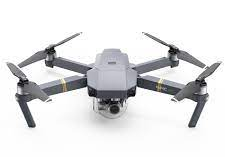
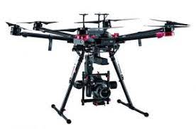
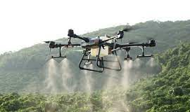

Nuestra empresa ha sido creada con la visión de brindar
soluciones innovadoras en el campo de los drones,
proporcionando a nuestros clientes tecnología de vanguardia
para satisfacer sus necesidades y superar sus expectativas.
Nuestros productos
  - Drones de consumo: Nuestra línea de drones de consumo está dirigida a entusiastas y aficionados que buscan experimentar el vuelo y capturar imágenes increíbles desde el aire. Estos drones son fáciles de usar, cuentan con cámaras de alta resolución y ofrecen características como seguimiento de objetos y modos de vuelo inteligentes.
- Drones profesionales: Para aquellos que buscan llevar su creatividad y trabajo al siguiente nivel, ofrecemos drones profesionales. Estos drones están equipados con cámaras de alta calidad y estabilización avanzada, lo que permite capturar imágenes y videos profesionales. Son ideales para fotógrafos, cineastas, profesionales de la inspección y mapeo, entre otros.
- Drones industriales: Nuestra línea de drones industriales está diseñada para aplicaciones más especializadas, como inspecciones de infraestructuras, vigilancia, agricultura de precisión y entrega de paquetes. Estos drones son robustos, capaces de soportar condiciones adversas y equipados con sensores especializados para cumplir con los requisitos de cada industria.
| Productos | Precios |
|---|---|
| Drones de consumo | $2'300.000 |
| Drones profesionales | $4'600.000 |
| Drones industriales | $6'500.000 |